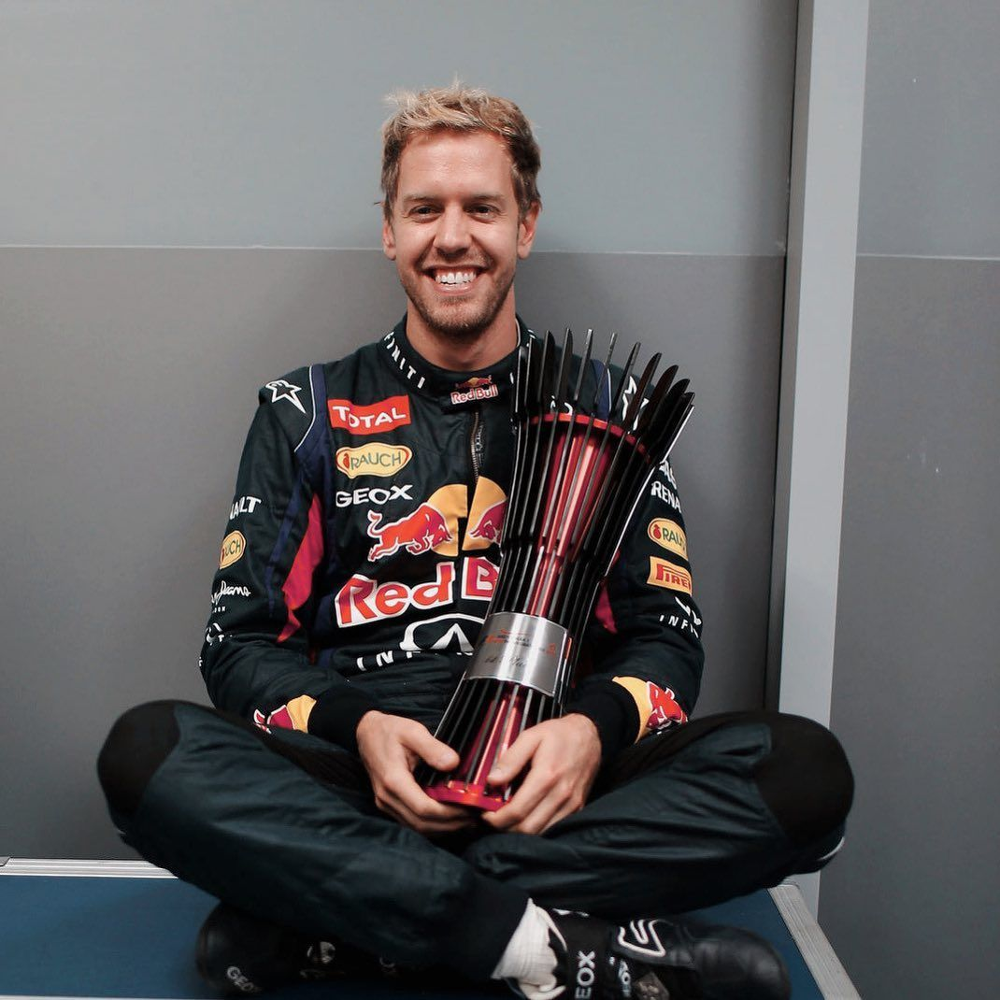

Sebastian Vettel

Sebastian Vettel es un piloto alemán de automovilismo. Llegó formando parte del Equipo Júnior de Red Bull
desde los 11 años. Ha ganado cuatro títulos mundiales de Fórmula 1 con el equipo Red Bull en 2010, 2011,
2012 y 2013, más tres subcampeonatos en 2009, 2017 y 2018 estos dos últimos con el equipo Ferrari.
Se convirtió el 27 de octubre de 2013 en el piloto más joven de la historia en ser tetracampeón.
Actualmente cuenta con 53 victorias, 122 podios y 57 pole positions.
El 28 de julio de 2022 anunció su retirada de la Fórmula 1.
Fernando Alonso
Fernando Alonso es un piloto español de automovilismo. Ha ganado dos veces el Campeonato Mundial de
Fórmula 1 en 2005 y 2006. También fue campeón del Mundial de Resistencia de la FIA y ganador de Le Mans.
Ha competido para Minardi, Renault, McLaren, Alpine y Ferrari, siendo uno de los pilotos más completos
de la historia del automovilismo.
Lewis Hamilton
Lewis Carl Davidson Hamilton es un piloto británico de automovilismo. Debutó en Fórmula 1 en 2007 con
McLaren y desde 2013 compite con Mercedes.
Es siete veces campeón del mundo, igualando el récord de Michael Schumacher, y posee el récord de
más victorias en la historia de la Fórmula 1.